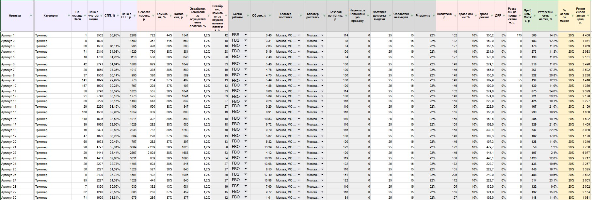
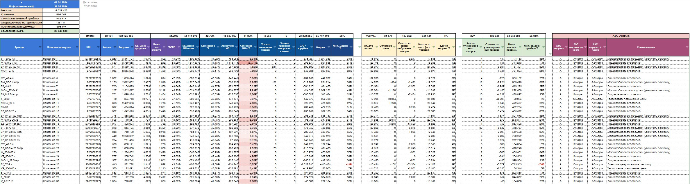
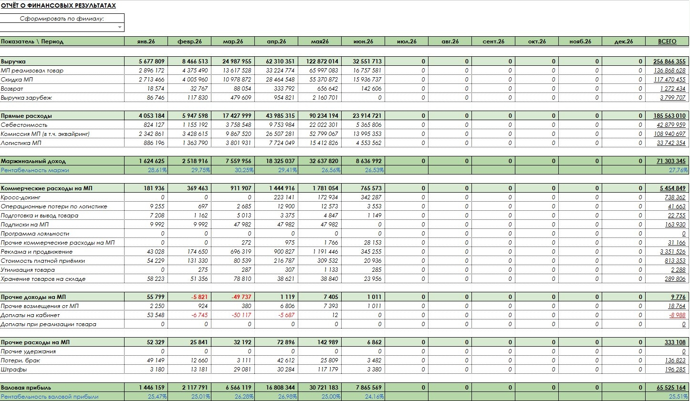
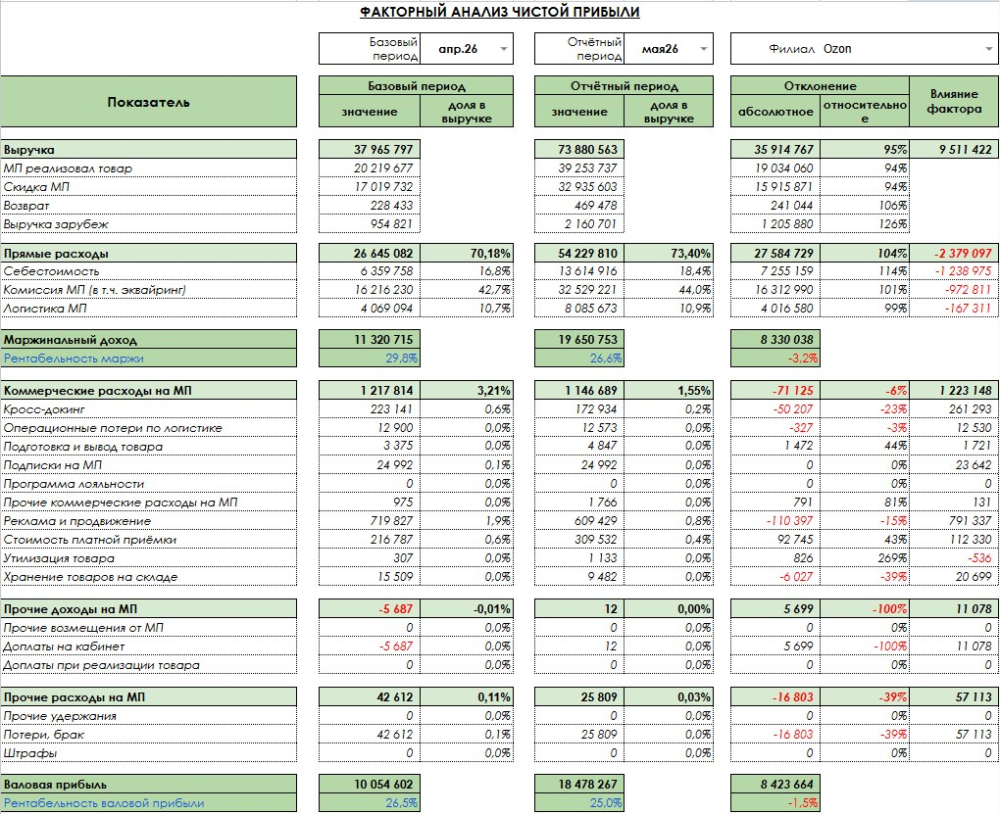
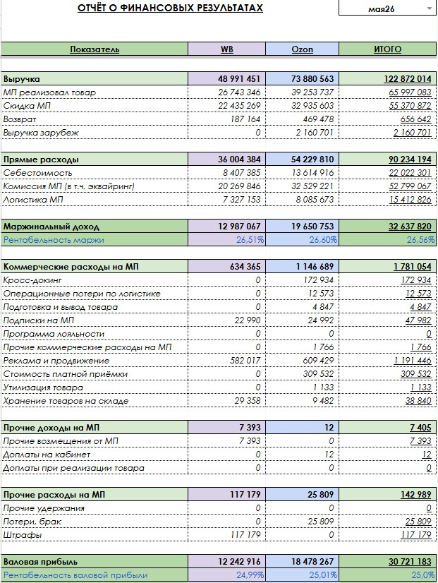
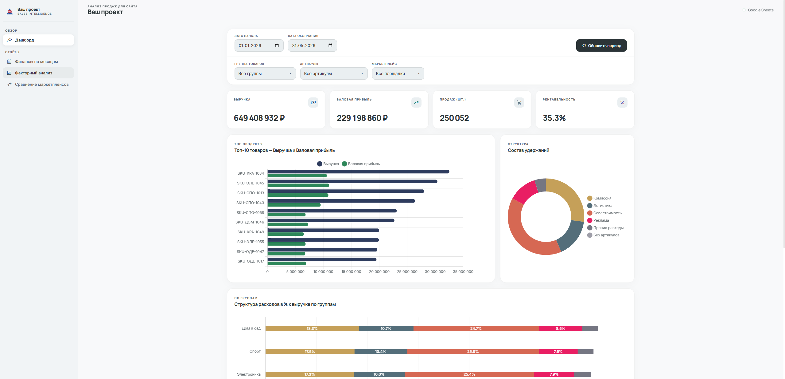

Для селлеров Ozon, Wildberries, Яндекс Маркет и Lamoda. Бизнес под микроскопом.
Абсолютная сверяемость каждой цифры.
Масштабный бизнес не терпит интуитивного управления. Когда выручка исчисляется десятками и сотнями миллионов, погрешность даже в 1% может стоить компании существенной части прибыли.
Наша задача — перевести управление компанией на язык точных, математически проверяемых метрик. Мы гарантируем точность обработки огромных массивов данных (десятки тысяч SKU, сотни тысяч транзакций) без единой потери.
Фундамент нашего подхода — 100% сверяемость данных на каждом уровне. Никаких «неучтенных» расходов.
Анализ продаж = ОФР (P&L) = Данные площадок
Часто собственник видит общую прибыль, но не знает, что часть ассортимента работает в минус. Примеры из нашей практики:
Моделирование рентабельности до старта продаж или запуска акций. Вы заранее знаете свою маржинальность при любом сценарии изменения комиссий маркетплейсов.

Мы не смотрим на "средние показатели по больнице". Логика выстроена так, что расходы максимально распределяются по отношению к каждому артикулу, даже если это требует дополнительной выгрузки отчетности.

Консолидация всей прибыли и косвенных расходов компании в единый кристально чистый P&L. Здесь видна реальная эффективность бизнеса.

Мы не просто констатируем факт прибыли или убытка. Факторный анализ показывает, почему изменилась рентабельность и какие именно метрики (логистика, комиссии, скидки) повлияли на итоговый финансовый результат.

Анализ эффективности Ozon, Wildberries, Яндекс Маркет и Lamoda бок о бок за конкретный месяц. Наглядное сравнение доли рынка, маржинальности и структуры расходов для перераспределения рекламных бюджетов.

Сухие цифры трансформируются в наглядные дашборды: Live-KPI (Выручка, Рентабельность), аналитика Топ-10 товаров и состав удержаний.

Мы не ограничиваемся базовой аналитикой. Для сложных бизнес-моделей мы разрабатываем специализированные надстройки, которые учитывают любую специфику вашего бизнеса:
Внедрение нашей системы дает 100% уверенность в каждой цифре. Вы получаете полную детализацию всех процессов и мощный инструмент для принятия стратегических решений.
Запишитесь на индивидуальный аудит. Мы проведем демо-разбор на базе вашего товара и покажем потенциал роста чистой прибыли.
Контакты: Telegram @YourAccount | +7 (999) 000-00-00